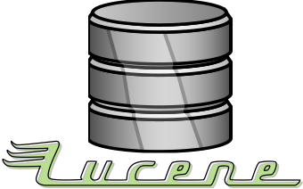

Eine Suchmaschine für die Universität Leipzig
Kurs Information Retrieval: WS 17/18
Maik Fröbe, Danilo Morgado, Sebastian Günther



Kurs Information Retrieval: WS 17/18
Maik Fröbe, Danilo Morgado, Sebastian Günther